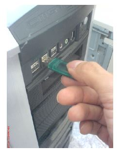

Installation
Overview
This guide is to serve as a reference for installation of V-Ray 2.0 for 3ds Max and 3ds Max Design. Please refer to the Glossary section for specific terms used in this document.
Note: detailed installation instructions are included in the installation PDF guide . V-Ray 2.0 for 3ds Max Install Guide
You can download the latest official version of V-Ray 2.0 from http://www.chaosgroup.com with the account supplied to you by Chaos Group or your reseller.
If you experience any problems, please check the “Troubleshooting” section. If you are still having problems please contact our support team:
http://www.chaosgroup.com/en/2/support.html
A complete installation of V-Ray 2.0 for 3ds Max consists of:
•V-Ray
•V-Ray RT
•V-Ray Standalone
•V-Ray DR Spawner
•V-Ray license server
•V-Ray tools
•V-Ray SDK
•Documentation
•WIBU-KEY drivers
•Dongle (hardware lock)
System requirements
Please make sure that your system fulfills these requirements before installing V-Ray.
|
Processor |
Intel Pentium IV or compatible processor with SSE2 support |
|
RAM |
4 GB RAM and 4 GB swap minimum – recommended 8 GB or more RAM, 8 GB or more swap file |
|
Operating system |
Windows XP, Windows Vista, Windows 7, Windows 8, 64 bit versions only |
|
3ds Max |
3ds Max 2011 /3ds Max Design 2011 or later, 64 bit versions only |
|
USB port |
Required for hardware lock, preferably USB 2.0 |
|
TCP/IP |
Only IPv4 is supported. IPv6 is currently not supported. |
Installation of V-Ray 2.0
V-Ray installer will automatically remove any previous installations. This will allow you to seamlessly upgrade from older versions of V-Ray. If you experience problems you can manually uninstall the previous versions to perform a clean install. For more information please refer to the “Uninstall V-Ray” section.
Before running the installation, make sure your Windows account has administrative privileges and the dongle is not plugged in.
Setting up the installation
Run the installer.
1. Upon the start of the installation, Windows may ask you for permission to run the installer with administrator privileges. Please confirm.
2. First you will see the Welcome screen. Press Next to continue.
3. The installer will detect and list any applications that need to be closed. Please close them and click Next.
4. You will be presented with the V-Ray licensing agreements. Please take a moment to review the agreement. Click the “I agree” button to proceed:

5. During the next step you can choose the installation type. The available installation types are:
-
Workstation – this is a full installation and includes all components as described in the “Installation overview” section. It will allow you to use V-Ray in 3ds Max, do Distributed or Network Rendering, run V-Ray RT render server, use V-Ray SDK, and have V-Ray license server on this machine.
-
3ds Max render slave – this installation includes V-Ray, V-Ray RT, V-Ray Standalone, V-Ray DR Spawner, V-Ray tools, and documentation. Please select this option if you do not need a V-Ray license server on the machine.
-
Standalone render slave – this installation includes V-Ray Standalone and V-Ray RT render server. Please choose this option if you plan to use this machine only for Distributed Rendering with V-Ray Standalone and a V-Ray RT render server.
-
License server only – this will install the V-Ray license server and the WIBU-KEY drivers. Please choose this option if you need to use only the V-Ray license server on the machine.
6. The installer will detect the default installation folders. Please make sure that they are correct
7. Next you can customize the installation:
-
How are you going to connect to the V-Ray license server – specifies whether the V-Ray license server will run locally or on another machine.
-
Register V-Ray Menus - when enabled V-Ray specific menus will appear in the 3ds Max interface.
When ready click the “Next” button.
8. Next you can choose to:
-
Install WIBU key drivers – Leave this checked to install the WIBU-KEY drivers that come with the installation. You can download and install the newest drivers from the WIBU-Systems website: http://wibu.com/download_user.php
-
Register the V-Ray license service – check this option if you want to register the V-Ray license server as a Windows service and automatically start upon the Windows boot. In this case the V-Ray license server will run in the background as a service and there will be no need to run it manually. There will be no V-Ray license server icon in the Windows System Tray.
When ready click the “Next” button.
9. The next window confirms that the installer is ready. Click next to proceed.
10. The installer will detect any previous installations and ask you to uninstall them. Click Yes and follow the instructions of the uninstaller.
11. Once the installation is complete you will see this window. Click Finish to complete the installation.
Installing the WIBU-KEY drivers
1. If you have opted to install the V-Ray license server and the WIBU-KEY drivers you can now plug your dongle into a free USB port on your machine, preferably USB 2.0 port:

If you have more than one V-Ray dongle, you can plug them all into the same machine. The V-Ray license server will use all the available licenses from the dongles.
2. Start the V-Ray license service from Windows Start > All Programs > Chaos Group > V-Ray Adv for 3ds Max... > Licensing > Launch V-Ray license server
If you receive a message that it is already running you can proceed with the next step.
3. If Windows Firewall is enabled, you may get the message below. Select the Unblock option to allow connections to the V-Ray license server.
4. If the V-Ray license server starts successfully, you will get the V-Ray license server icon in the Windows System Tray:
5. If you have opted to register the V-Ray license server as a Windows service, it will start automatically on the next Windows boot and this icon will not be visible. If there is no dongle attached to the machine, it will still start as a service but you will not be able to access the web status page or use any licenses until you plug-in your dongle.
To make sure that your license server is up and running and you have the necessary licenses, please proceed with the “Setting up your licenses” section on the Licensing System page.
Glossary
Dongle – encrypted physical hardware lock, very similar to a USB flash drive which contains the product licenses.
WIBU-KEY drivers – drivers for the dongle.
Render Node – machine that is doing the actual rendering.
Distributed Rendering – dividing frames to buckets and rendering them on different render nodes by using V-Ray DR spawner, V-Ray Standalone or a V-Ray RT render server.
Network Rendering – rendering whole frames on each render node, for example by submitting jobs to job managers like Backburner.
V-Ray DR spawner – a V-Ray tool used to start 3ds Max in server mode for Distributed Rendering.
V-Ray SDK – a V-Ray Software Development Kit used for creation of custom materials and geometry.